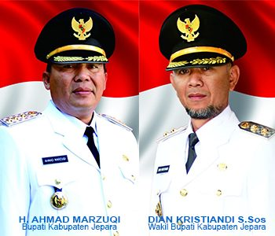

WISATA YANG ADA DI KABUPATEN JEPARA
Berikut ini adalah beberapa tempat wisata yang ada di Jepara :
- Kepulauan Karimun Jawa
- Pantai Kartini
- Benteng Portugis
- Seaside Beach Resto & Lounge
- Pantai Bandengan
- Jepara Ourland Park
- Kepulauan Karimun Jawa
- Pantai Kartini
- Benteng Portugis
- Seaside Beach Resto & Lounge
- Pantai Bandengan
- Jepara Ourland Park
BUPATI DAN WAKIL BUPATI
PALING BANYAK DIBACA
- Kapolres Serahkan Kendaraan Hasil Curian Kepada Pemilik
- Pendidikan di Jepara Harus Fokus pada Penguatan Karakter
- Meriahkan Hantaru, ATR/BPN Jepara Gelar Aksi Kemanusiaan
- Ketiga Kalinya, Jepara International Triathlon
- 7 Puluhan Anggota UPZ Kecamatan Dilantik Serentak
- Kurang dari Dua Pekan, ATR/BPN Jepara Optimis Penuhi Target